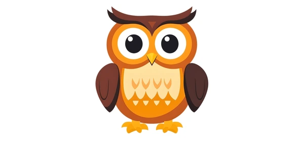

Como Empezar?
Inicia pocket code.
En el menú principal, selecciona “Nuevo” y dale un nombre que puede ser “Búhos” .Asegúrate que está vacío y en pantalla vertical.
Selecciona “Fondo” y luego “Fondos" para agregar el fondo nocturno selecciona botón “+”
Seleccionar “Librería de Medios".
Selecciona el objeto “Violet Night”.
Regresa al menú del programa edición.
Selecciona el símbolo “+” para agregar un objeto de la librería de medios.
Busca “Ow(Blue)y seleccionarlo para agregarlo al programa.
Selecciona el menú del programa el objeto “Ow(Blue), después selecciona “Apariencias” y agrega desde la librería los medios de cada uno de los Búhos.
Recursos Multimedia
Resultado Final:
Codigo (en bloques):